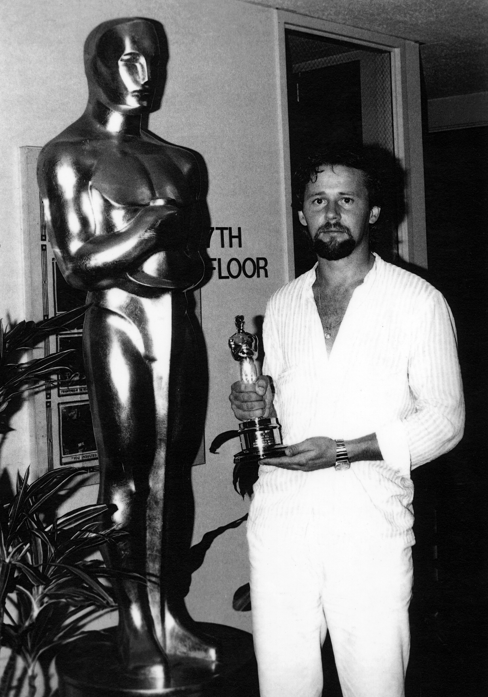
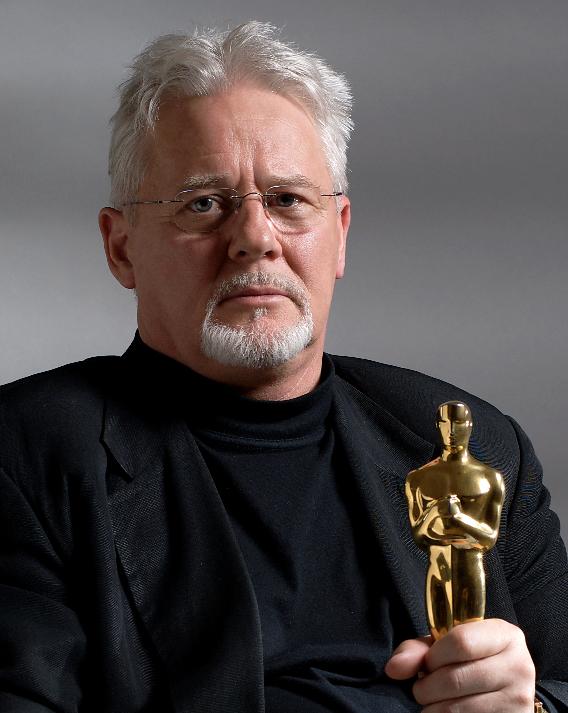
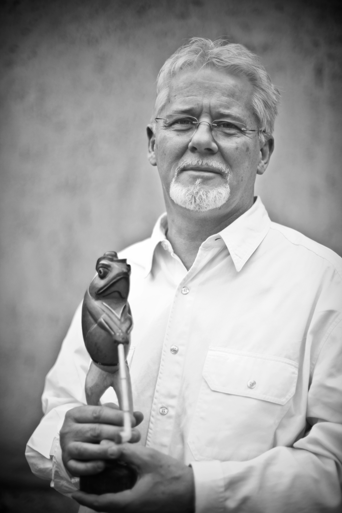
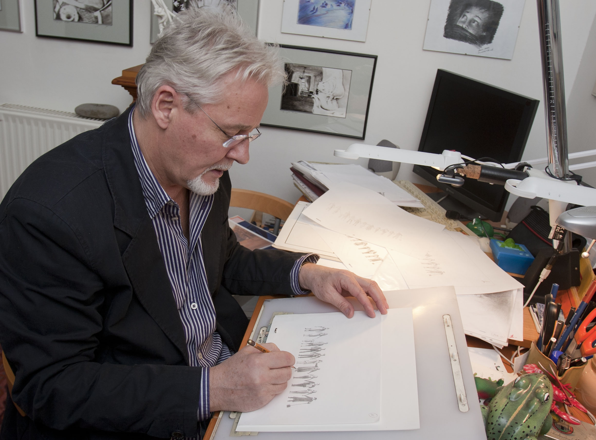

„A kő" első animációs filmje - Nepp József ötlete alapján
RÓFUSZ FERENC - SZAKMAI ÉLETRAJZ
Rófusz Ferenc nemzetközileg ismert és számtalan díjjal elismert rajzfilmrendező.
1946-ban született Magyarországon, Budapesten. Karrierje 1968-ban animációs asszisztensként kezdődött a Pannónia Filmstúdióban.
„A Légy" című rajzfilm írói és rendezői munkájáért 1981-ben Oscar díjat kapott.
1981-ben lett animációs rendező, 1984-ben Németországba utazott és ott dolgozott animációs TV-sorozatokon. 1988-ban Kanadába költözött. A Torontói Nelvana Ltd. animációs cégnek dolgozott. 1991-ben megalapította saját animációs cégét a Super Fly Films Inc.-et. Kreatív rendezőként irányítva megvalósított több mint hatvan reklámfilmet és számos animációs produkciót úgy a hagyományos, mint computer- digitális technikát alkalmazva. 2001 óta ismét Budapesten él, tanít, és számos filmötletén dolgozik.
Munkássága elismeréséül 2011-ben Kossuth-díjjal tüntették ki. Szakmai életművét 2018-ban a Nemzet Művésze címmel ismerték el.
1972
1977
„Gusztáv olvasna" TV-sorozat Jankovics Marcell társrendezővel
I. díj, Gabrovo, Bulgária
1978
„Kutyakiállítás" animációs reklámfilm
Kategória győztes, Budapest, Reklámfilm-szemle
Közben több TV-sorozatban és egészestés rajzfilmben is részt vett;
Gusztáv, Mézga, Dr. Bubó, János vitéz
1980
„A Légy" animációs egyedi film
Közönség - és Kategória-díj, Ottawa, Kanada
Közönségdíj, Lucca, Olaszország
Grand-Prix, Lille, Franciaország
Kritikusok díja, Krakkó, Lengyelország
A legjobb animációs film díja, Espigno, Portugália
Fair play-díj, Miskolc
1981
Oscar-díj, Los Angeles, Egyesült Államok
Don Quijote-díj, Krakkó, Lengyelország
Szocialista kultúráért állami kitüntetés, Balázs Béla-díj
1982
„Holtpont" animációs egyedi film
A Zsűri különdíja, Stuttgart, Németország
Kategória-győztes, Oberhausen, Németország
1983
„Gravitáció" animációs egyedi film
Kategória-győztes, Hiroshima, Japán
Kategória-győztes, Oberhausen, Németország
Filmfesztivál fődíja, Miskolc
Kategória-győztes, Espigno, Portugália
Kategória-győztes, Toronto, Kanada
1984
A Budapesti Koncertirodán keresztül Németországba szerződött animációs TV-sorozatok készítésére
1985
Filmkritikusok díja
1988
Szerződést kapott a kanadai Nelvana Ltd. Animációs Stúdióba TV-sorozatok és hirdetések készítésére
1991
Megalapította saját stúdióját, Super Fly Film Inc. Torontó, Kanada
1992
„Road Warrior" animációs reklámfilm
Kategória III. díj, Houston, Egyesült Államok
1996
Arany Pillangó díj, Budapest
1998
„Animated News" könyvhirdetés
Bessies-díj, Torontó Kanada
Kategória II. díj, Hiroshima, Japán
1998
„Buccaneers Gold" („Kalózok Aranya") computer játék
Kategória győztes, San Francisco, USA
1999
„Solutions" animációs reklámfilm
Kategória-győztes, Houston, Egyesült Államok
2001
Animációs kurzust indított a Budai Rajziskolában
2002
„Ceasefire!" („Tüzet szüntess!") animációs egyedi film
2005
„Szerencse fel!" TV-sorozat
„Dog's life" animációs egyedi film
Kategória-díj, Rio de Janeiro, Brazília
Kategória-díj, Dervio, Olaszország
2007
„Ez kész pénz!" animációs TV sorozat - ötletgazda
2010
A MOME Egyetemi Szenátusa, munkássága elismeréséül, Címzetes Egyetemi Tanári címet adományozott neki
2011
Kossuth-díj
„Ticket" animációs egyedi film
Gyermekzsűri díja, KAFF, Kecskemét
2012
Aranykalász-díj, Valladolid - Spanyolország
2012
Legjobb animációs rövidfilm díja, Syracuse, New York, USA
2012
A Magyar Művészetért Díj, Budapest
2013
A „Hoppi mesék" animációs gyermekfilm-sorozat „Hoppik és a varázsbot" című 1. epizódját készítette el az MTVA által kiírt Macskássy Gyula 2012 pályázat támogatásával
2014
Regionális Príma-díj, Gödöllő
2015
Elkészült a „Hoppi mesék" 2-3, valamint 2016-ban további 10 epizódja a Dargay Attila 2014 pályázati támogatással
2015
Pályázati támogatással elkezdte „Az utolsó vacsora" című, egyedi animációs festményfilm megvalósítását
2016
Életműdíj – Szolnoki Nemzetközi Képzőművészeti Filmfesztivál
Életmű Kiállítás – FilmesHáz Budapest
2017
Életmű Kiállítás, workshop – Kaposvári Egyetem Rippl-Rónai Művészeti Kar
Barabás Villa - Budapest
Rendezői díj - MTVA, KAFF, Kecskemét A „Hoppi mesék" animációs sorozat
Elkészült az „Egy év Hoppifalván" egészestés animációs film a Dargay Attila 2016 pályázati támogatással
Legjobb Animációs Film díja – Kalkutta (KIWEFF) „Hoppi mesék – Karácsony"
2018
Befejezte „Az utolsó vacsora" című, egyedi animációs festményfilmet, amellyel Rófusz Ferenc tiszteletét szeretné kifejezni Leonardo da Vinci egyre jobban pusztuló, de mulandóságában is csodálatos alkotása iránt.
2018
Szakmai életművét a Nemzet Művésze kitüntető címmel ismerték el.
2019
Életműdíj - KAFF, Kecskemét
Az utolsó vacsora
Legjobb Animációs Rövidfilm – Jesus Cine Fest, Buenos Aires
II. díj - Hét Domb Filmfesztivál, Komló
III. díj - 22. Faludi Nemzetközi Filmszemle, Budapest
2020
Magyar Filmdíj 2020 - Budapest
2020
Legjobb Animációs film – Alexandre Trauner Art/Film Fesztivál, Szolnok
2020
Hegyvidék Díszpolgára cím – Budapest Főváros XII. kerület Hegyvidéki Önkormányzat



